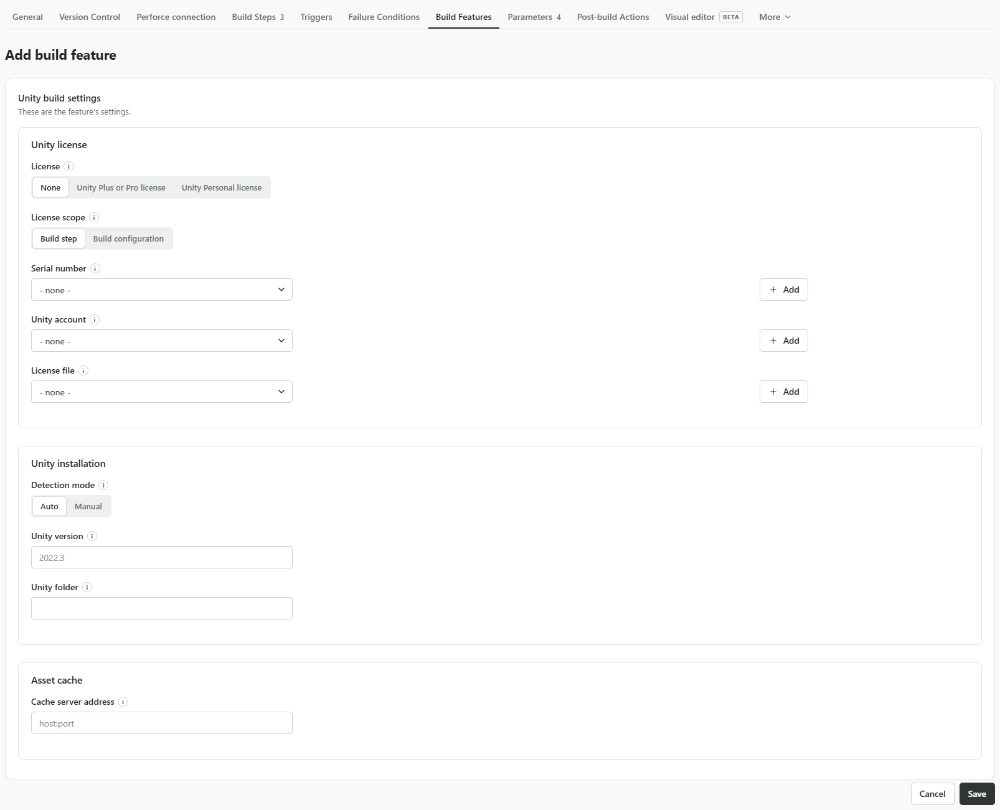

Unity build settings
A build feature that activates a Unity license before your Unity steps, returns it afterwards, and sets the asset cache server.
When to use it
Use it when your build agents do not already have a signed-in, licensed Unity Editor. A Unity Plus or Pro license is tied to a serial number and a Unity account. Buildspawn activates it, builds, and gives the seat back so another agent can use it. A Unity Personal license uses a license file. You can also use the feature only to point Unity at an asset cache server, which makes imports faster.
How to set it up
First add the secrets as credentials. The feature never takes a typed password.
- For a Plus or Pro license, add a Secret text credential that holds the serial number, and a Username with password credential for the Unity account. For a Personal license, add a Secret file (or Secret text) credential that holds the
.ulffile, up to 100 KB. - Open the build configuration and go to Settings › Build features.
- Click Add build feature and choose Unity build settings. There is one per build configuration.
- Choose the License, the License scope and pick the credentials.
- Click Save.

Every field
Unity license
| Field | What it does | Default | Example |
|---|---|---|---|
| License | None leaves licensing to the agent. Unity Plus or Pro license uses a serial number and a Unity account. Unity Personal license uses a license file. | None | Unity Plus or Pro license |
| License scope | Build step: activate and return for every Unity step in the build configuration. Build configuration: activate once for the whole build and return at the end. | Build step | Build configuration |
| Serial number | A Secret text credential that holds the serial number. Shown for a Plus or Pro license. | None | unity-serial |
| Unity account | A Username with password credential for the Unity account. Used to activate and to return a Plus or Pro license. | None | unity-build-account |
| License file | A Secret file or Secret text credential that holds the .ulf file. It can only be used on the machine that the matching .alf file came from. Shown for a Personal license. | None | unity-personal-ulf |
Unity installation
These say which Editor the license commands use.
| Field | What it does | Default | Example |
|---|---|---|---|
| Detection mode | Auto picks an Editor the agent found. Manual uses the folder below. | Auto, or Manual when a folder is set | Auto |
| Unity version | Auto mode. Such as 2022.3. Empty takes the latest Editor on the agent. Unity steps of the build configuration use it when they name none. | Empty | 6000.0 |
| Unity folder | Manual mode. The folder that holds the Unity Editor. | Empty | C:\Program Files\Unity\Hub\Editor\6000.0.23f1 |
Asset cache
| Field | What it does | Default | Example |
|---|---|---|---|
| Cache server address | A Unity Accelerator or cache server, as host:port. If the project's asset pipeline is version 1 or unknown, Unity gets -CacheServerIPAddress. If it is version 2, Unity gets -EnableCacheServer and -cacheServerEndpoint. The log says which one was used. | Empty | unity-cache.studio.example:10080 |
How activation and return work
- Plus or Pro, scope Build step: before each Unity step, Buildspawn runs the Editor with
-serial,-usernameand-passwordto activate. After the step, it runs the Editor with-returnlicense. It returns the license even when the step fails or is stopped. - Plus or Pro, scope Build configuration: it activates once before the first step and returns once before the build ends.
- Personal: the
.ulfcontent is written to a temporary file, the Editor runs with-manualLicenseFile, and the file is deleted afterwards. A Personal license is never returned. - The serial number, the password and the license file content are hidden in the whole build log, not only in the license steps.
While the license commands run, other programs on the agent can see their arguments. Use an agent that only your team can log on to.
A worked example
Skyforge has two Windows agents and one Unity Pro seat. The build configuration Windows Build has a Unity step to run tests and one to build the player. The studio sets:
| Field | Value |
|---|---|
| License | Unity Plus or Pro license |
| License scope | Build configuration (one activation for both steps) |
| Serial number | unity-serial |
| Unity account | unity-build-account |
| Unity version | 6000.0 |
| Cache server address | unity-cache.studio.example:10080 |
What you see when it runs
- A block named Activate Unity license (or Activate Personal Unity license) in the log. Each command line is shown with its secrets as
********. - Your Unity steps.
- A block named Return Unity license at the end.
- On the steps list, the feature's summary shows the license, Cache server host:port, Unity version or Unity folder.
Problems and fixes
| Problem | What to do |
|---|---|
| A warning Process exited with code ... Unity log: follows the activation. | Activation failed. Read the Unity log printed there. Check the serial, the account password and that the seat is free. |
| Could not return the Unity license. | The account or network failed during the return. Return the seat by hand in your Unity account page. |
| Personal activation fails. | A .ulf file only works on the machine that made the matching .alf. Run the build on that agent. |
| The address should be host:port. | Write the cache server as host:port. |
| ... is not a Unity version. | Use a version such as 2022.3. |